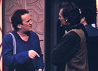
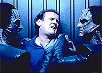
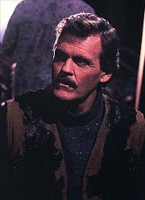
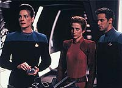
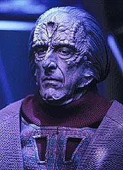

MANCHETE
DO EPISDIO
Histria
bem executada mostra sistema
de justia Cardassiano em operao
Episdio
anterior | Prximo
episdio
Sinopse:
Data Estelar: 47944.2.
O'Brien est prestes a partir em
duas semanas de licena com Keiko quando encontra, no caminho
para o Explorador, um conhecido de nome Raymond Boone, dos tempos
em que o chefe serviu a bordo da Rutledge. Eles trocam gentilezas
e O'Brien parte sem perceber que Boone gravou a sua voz. Algum
tempo depois, o Explorador de O'Brien e Keiko interceptado por
uma patrulha Cardassiana comandada por gul Evek. Sua carga
confiscada e O'Brien levado preso capital Cardassiana,
acusado de um crime que Evek se recusa a dizer qual . Keiko
devolvida a DS9.

Na
capital Cardassiana, O'Brien brutalmente despido e examinado no
bureau de investigao Cardassiano. A juza de seu caso, de
nome Makbar, vai at ele e o informa de que seu advogado se chama
Kovat, mas se recusa em apresentar a natureza do crime
alegadamente cometido pelo chefe. Makbar contata Sisko e informa
que est retendo O'Brien para julgamento, e novamente se recusa a
dar mais detalhes sobre a acusao, porm garante que o
julgamento meramente uma apresentao irrefutvel da culpa
(prviamente estabelecida) do chefe. Diz tambm que a execuo
de O'Brien est marcada para a semana que vem. Makbar permite a
ida de Keiko (esposa do ru) e Odo (como conselheiro do ru,
pois o comissrio um oficial da corte Cardassiana por ter
servido gul Dukat em Terok Nor) para o julgamento.
Na estao, descobertas levantam suspeitas sobre O'Brien, que j
admitiu diversas vezes publicamente o seu desgosto pelos
Cardassianos. Duas dzias de ogivas fotnicas esto faltando e
uma identificao vocal de O'Brien encontrada nos registros
de acesso ao depsito. Constitui-se um quadro em que O'Brien
poderia estar levando as ogivas no Explorador para os Maquis. Na
capital Cardassiana, Odo interroga O'Brien sobre o assunto e o
chefe nega qualquer envolvimento com o roubo das ogivas ou com os
Maquis.

Em
DS9, Dax demonstra que o registro vocal de O'Brien foi forjado e
baseado em amostras da voz do chefe em outro contexto. Kira
identifica Boone como tendo encontrado O'Brien no caminho para o
Explorador e Sisko o traz para interrogatrio, suspeitando que
ele possa ser membro dos Maquis. Boone nega tudo. Quando a
investigao parece naufragar, um verdadeiro membro dos Maquis
contata Bashir e diz que Boone no tem nada a ver com eles. Sisko
novamente traz Boone, agora para que Bashir possa fazer um exame mdico
completo nele.
No julgamento, Evek apresenta as ogivas apreendidas e a tese de
que O'Brien iria entreg-las aos Maquis, sobre os quais ele diz
que tornaram a situao na Zona Desmilitarizada completamente
insustentvel. Makbar no permite que Odo apresente a evidncia
da manipulao vocal que poderia inocentar o chefe. Posto no
banco das testemunhas, O'Brien pressionado por Kovat e Makbar
para confessar o crime, o que ele no faz. Quando Makbar est
prestes a declarar a culpa de O'Brien, Sisko entra na sala com
Boone. O semblante de Makbar muda completamente e ela diz que
apesar de O'Brien ser culpado ela ir liberar o chefe sob a custdia
de Sisko "em prol das futuras relaes entre a Federao
e Cardssia".
Na volta para estao no Explorador, Sisko explica que o real
Boone provavelmente morreu na priso e foi subtitudo por um
Cardassiano modificado cirurgicamente oito anos atrs, um espio.
A priso de O'Brien nunca foi algo dirigido em particular ao
chefe mas sim uma estratgia Cardassiana para "provar"
que os Maquis so oficialmente sancionados pela Federao.
Quando Sisko chegou com Boone ao julgamento, ficou claro a Makbar
que ele tinha as provas para desacreditar o governo Cardassiano na
frente do planeta inteiro. Finalmente, um alividado casal O'Brien
pde seguir com sua merecida licena.
Comentrios:
Ainda que definitivamente no no nvel dos seis ltimos episdios,
"Tribunal" emerge como um vencedor por oferecer
um bom valor de entretenimento com sua descrio do bizarro
sistema judicirio Cardassiano e tambm ajudar a srie a se
manter focada tematicamente, tratando do continuado conflito na
Zona Desmilitarizada. Porm, mesmo valores de produo de timo
gosto e algumas excelentes atuaes (de Meaney e Auberjonois) no
conseguem fazer esquecer um final ridiculamente corrido, com um
fechamento extremamente expositivo. Saiba mais detalhes, sem
precisar doar um molar para o bureau de identificao
Cardassiano, nas prximas linhas.

"Tribunal"
uma exposio do sistema judicirio Cardasiano baseado em
certas falas (maravilhosas por sinal) de gul Dukat em "The
Maquis, Part I". Da quem assisitir a este episdio
esperando por um veculo focado e intenso sobre O'Brien lidando
com seus demnios da poca das guerras de fronteira Cardassianas
vai se decepcionar. Porm, para os espectadores que levarem em
conta o que ele , isto , mais um captulo dos continuados
conflitos na Zona Desmilitarizada, tendo como pano de fundo o
sistema judicirio Cardassiano e a histria pregressa de O'Brien
com estes, pode gostar bastante da experincia.
O sistema de justia Cardassiano retratado da forma mais
simples possvel, como uma deturpao das regras dos tribunais
da Federao (ou seja dos tribunais americanos). Isto acaba por
reduzir a intensidade do episdio como um todo, abrindo espao
para um certo tom de stira. No h maiores problemas com isso.
A coisa mais forte sobre a sociedade Cardassiana apresentada o
fato de que os seus julgamentos so essencialmente elaborados
shows transmitidos globalmente de forma a manter o status quo do
Estado, um tema recorrente desta raa. Um Cardassiano o que
ele pode fazer pelo Estado, Da no fazendo muito sentido
direitos individuais, da tal sistema de justia. Com estes
tribunais e com a Ordem Obsidiana (mencionada em "The
Wire"), no a toa que os Cardassianos so o povo
mais paranico do quadrante.

A
trama do episdio foi do tipo "receita de cozinha", bem
conhecida, mas bem executada. Quanto ao plano dos Cardassianos:
DS9 (uma estao Cardassiana) o posto comandado pela Frota
mais prximo de Cardssia, da a oportunidade; a atitude
anti-Cardassiana de O'Brien e os motivos por isto so bem
conhecidos e eles tinham o "falso Boone" (e
provavelmente outros "falsos alguns"), um amigo de
O'Brien --o que tambm bastante razovel visto o evento
importante que os relaciona.
(No posso evitar de pensar: quantos espies alterados
cirurgicamente a Federao e Cardssia tm de parte a parte?)
O que depe contra o episdio a cena final to corrida e
expositiva que beira a arbitrariedade e mesmo faz por merecer um
certo sorriso cnico, por ser uma cena com ZERO valor dramtico,
escrita somente para benefcio da audincia. No
necessariamente a pior escrita do mundo mas definitivamente tambm
no a mais sofisticada.
O'Brien, sempre "o homem comum com quem qualquer um pode se
identificar", traz algumas particularidades desta caracterizao
ao episdio. Ele claramente a melhor escolha (dentre os
regulares da srie) para exemplificar o drama de um inocente
frente a uma sociedade totalitria e cruel; Nenhum outro
personagem do franchise de Jornada consegue dizer algo do
tipo "que nunca agiu de forma a perder o respeito de sua
filha" e fazer sentido no contexto deste mesmo franchise. Da
vem um grande problema, nunca houve dvidas da inocncia de
O'Brien, o que tirou de sada grande parte da possvel fora do
episdio. Com esta escolha ficou claro para a audincia que
algum tipo de manipulao estava em andamento. Foi interessante
lembrar Setlik III, e o interrogatrio de Makbar sobre os
preconceitos do chefe frente aos Cardassianos foi bem colocado.
Mas o episdio fica longe de ser uma bem-acabada obra para o
personagem.
Odo foi (surpreendentemente) o grande personagem do episdio e
continuou a nos brindar com uma grande presena e uma
incapacidade genuna em julgar as pessoas. A forma com que ele
sinceramente admite, mesmo diante das reservas dos demais, a
Keiko, que O'Brien deve estar sendo torturado e ao mesmo tempo
oferece uma grande simpatia esposa do chefe muito
interessante. Outro ponto digno de nota a forma como ele aborda
O'Brien sobre um possvel envolvimento dele com os Maquis, 100%
profissional e ainda assim gentil e respeitoso (o "Sim,
senhor" que O'Brien oferece a ele ao final da conversa
devido a isto, nada tem a ver com hierarquia). hilrio como
Odo consegue emperrar o julgamento mentindo (infinitamente bem)
sobre a sua falta de conhecimento sobre o sistema de justia
Cardassiano. Digno de nota tambm o fato de que, apesar de Odo
afirmar que nos tempos em que os Cardassianos comandavam DS9, esta
era mais segura, ele de forma alguma estava satisfeito com o
sistema de justia subjacente --ao qual ele servia. Tempos difceis
para o comissrio sem dvida.
(Na cena em que Odo interroga O'Brien sobre o possvel
envolvimento do chefe com os Maquis, Rene Auberjonois introduz um
bocado de sub-texto com sua postura. Podemos inferir disto que ele
poderia estar se referindo aos acontecimentos de "A
Man Alone" da primeira temporada, em que Odo tambm
acusado injustamente de um crime que ele no cometeu e (ou)
dos acontecimentos de "Things Past", da quinta
temporada, em que descobrimos que, por um erro de Odo, trs
Bajorianos inocentes foram executados.)
Dentre os demais regulares, Kira levantou suspeitas de uma forma
natural e consistente, porm Bashir pareceu por demais exagerado
na defesa do amigo. Sisko e Dax ajudaram a levar a trama, nada
mais.
Evek foi essencialmente um elemento de trama, no um personagem
(ainda que um belo elemento de continuidade). Boone entrou e saiu
de forma completamente indefinida do episdio e sua aura de
"eu estou sujo" s serviu para entregar ainda mais as
suas atividades (aparentemente o roteirista no achou que a cena
em que ele mostra a gravao da voz de O'Brien fora suficiente
para expressar esta idia). Keiko foi bem usada a maior parte do
tempo, especialmente nas cenas na estao. Makbar esteve
razoavelmente bem na cenas no tribunal (ainda que uma presena
mais forte teria ajudado muito mais a vender a opresso do
sistema judicirio Cardassiano), porm muito fraca nas cenas
fora dele. Kovat, ainda que essencialmente um alvio cmico,
produziu bom valor de entretenimento e mesmo angariou alguma
simpatia.
A direo de estria de Brooks foi excelente, com destaque para
a cena em que O'Brien foi "processado", inmeros
detalhes de closes e diferentes tipos de iluminao mesclam
estilo e brutalidade de forma admirvel. As pinturas da paisagem
da capital Cardassiana so maravilhosas e a composio dos
grandes visores pblicos e dos espectadores sobre elas, foi de
muito bom gosto. O belssimo cenrio minimalista da corte
Cardassiana com mltiplos nveis e extremamente bem iluminado e
fotografado tambm foi um destaque. Pontos tambm para os
penteados e vesturios (at a roupa de Keiko estava tima).
(A cena na cela entre Odo e O'Brien tambm interessante, pois
em parte do dilogo vemos Odo interagindo com o reflexo de
O'Brien. Boa idia de Brooks.)
Rene Auberjonois deu um verdadeiro show de presena e
sensibilidade. incrvel como ele consegue transmitir tanta
intensidade com uma simples cruzada de braos. Bravo! Colm Meaney
como sempre foi perfeito em fazer um homem comum que age e reaje
como tal (ao contrrio do que alguns possam pensar, nada fcil
para um ator). Os demais regulares fizeram o "feijo com
arroz", ainda que talvez El Fadil tenha exagerado um pouco em
alguns trechos.

Somente
Weaver conseguiu ir alm do material oferecido na pele do
subserviente e pattico Kovat. Poe e Beck fizeram o possvel com
papis minsculos e rotineiros. Lagerfelt seguiu os altos e
baixos do material recebido, longe de realmente ser a presena
incarnada do sistema de justia de Cardssia, seja em termos de
poder, transcendncia ou absoluta antipatia. Chao teve alguns
problemas no incio do primeiro ato, nas cenas com Meaney no
Explorador: os dois pareciam muito desajeitados para um casal
realmente casado. Tambm foi dela a nica cena completamente
inassistvel do episdio, dando horrveis gritos choramingados
aps os Cardassianos se transportarem do Explorador com O'Brien.
No restante do episdio at que ela se saiu bem.
(A brincadeira do "Workaholic O'Brien" funcionou bem,
quando do incio do episdio com Kira, Dax e Sisko --o detalhe
do elevador foi bonitinho-- mas funcionou de forma grosseira e bvia
com Keiko, logo depois.)
A cena em que os Maquis contatam Bashir foi tima, no somente
para a trama do episdio em questo, mas por reforar os Maquis
como um potencial adversrio prximo e perigoso, que consegue
isolar completamente a enfermaria da estao com o oficial mdico
chefe dentro.
"Tribunal", ainda que dificilmente revolucionrio,
uma bem produzida hora de entretenimento com algumas notveis
virtudes nos temas revisitados referentes aos Cardassianos,
O'Brien e especialmente os Maquis. A fenomenal caracterizao de
Odo um bnus que por si s j vale a realizao do
segmento.
Citaes
Sisko - "Is he
gone?"
("Ele j foi?")
Kira - "Finally."
("Finalmente.")
Sisko - "Good. He's been driving me crazy all day."
("Bom. Ele esteve me deixando maluco o dia inteiro.")
O'Brien - "Must've been someone else in bed with us."
("Deve ter sido algum que estava na cama junto com a
gente.")
Evek - "You have the right to refuse to answer questions.
However, such refusal may be construed as a sign of guilt."
("Voc tem o direito de se recusar a responder perguntas.
Entretanto, uma recusa como essa pode ser interpretada como um
sinal de culpa.")
O'Brien - "I'm no angel --but I try to live each day as
the best human being I can be."
("Eu no sou u santo --mas tento viver cada dia como o
melhor ser humano que posso ser.")
Kovat - "Winning is not everything."
("Vencer no tudo.")
Trivia:
 Mais um episdio do tipo "vamos torturar o chefe
O'Brien".
Mais um episdio do tipo "vamos torturar o chefe
O'Brien".
Presena de Keiko e de Richard Poe, como Gul Evek.
Primeiro episdio dirigido por um ator da srie, no caso Avery
Brooks.
O episdio foi feito tendo como inspirao as falas de Dukat
sobre o sistema de justia Cardassiano em "The
Maquis, Part II".
Herman Zimmerman declarou que a arquitetura de Cardssia
fortemente baseada na obra "1984", de George Orwell.
O cenrio da corte Cardassiana foi uma rearrumao do cenrio
da holosute. Este cenrio serviu de inspirao para o
penteado de Makbar.
Foi a primeira cena de nudez de Colm Meaney. Existem paralelos
entre o tratamento recebido por O'Brien e o recebido por Picard no
clssico episdio da sexta temporada da Nova Gerao, "The
Chain of Command". Outros bons pontos de continuidade so
a lembrana da Rutledge (a antiga nave de O'Brien) e do massacre
de Setlik III.
Ficha
tcnica:
Escrito por Bill Dial
Direo de Avery Brooks
Exibido em 06/06/1994
Produo: 045
Elenco:
Avery Brooks como
Benjamin Lafayette Sisko
Ren Auberjonois como Odo
Nana Visitor como Kira Nerys
Colm Meaney como Miles Edward O'Brien
Siddig El Fadil como Julian Subatoi Bashir
Armin Shimerman como Quark
Terry Farrell como Jadzia Dax
Cirroc Lofton como Jake Sisko
Elenco convidado:
Rosalind Chao como Keiko O'Brien
Caroline Lagerfelt como Makbar
John Beck como Boone
Richard Poe como gul Evek
Julian Christopher como a voz Cardassiana
Fritz Weaver como Kovat
Majel Barrett-Roddenberry como a voz do computador